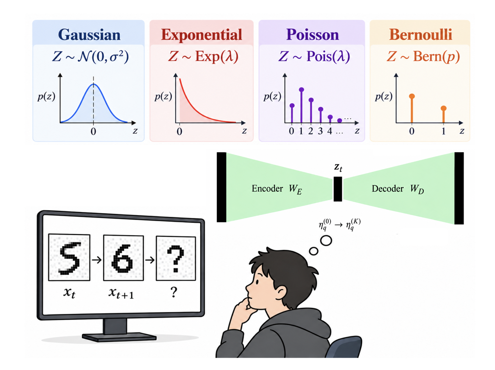
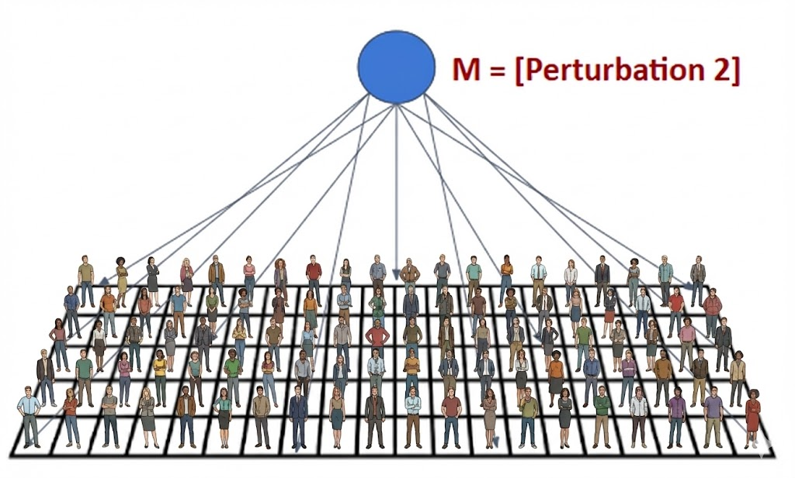
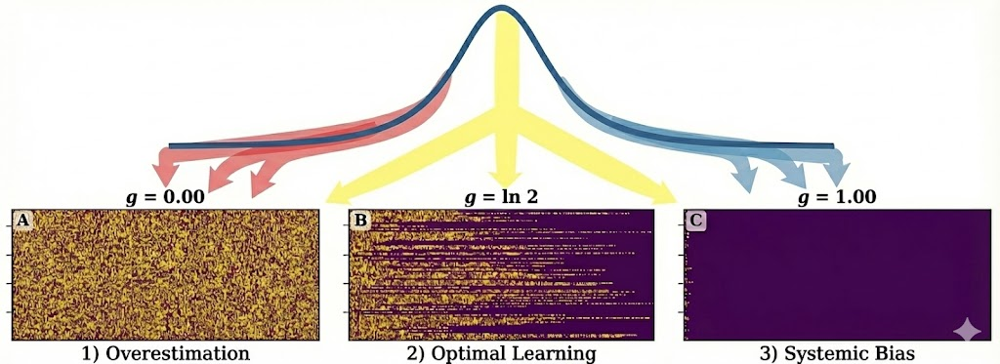

Findings

Chaotic Griffiths Phase in Neurons
Criticality
Investigate how intrinsic dynamical heterogeneity as a mechanism to extend a critical point into a critical region in Neuron maps

PredVIB: Latent Distribution Matters
Predictors
Prediction is an essential biological property. Here, we go beyond Gaussian exploring and performing simple experiments and see whether a probabilistic predictor learns by using statistically different internal properties.

Cultural Oscillations
Social Dynamics Model
A data-driven modification of the Axelrod model. By introducing periodic external fields, we simulate how collective attention shifts and oscillates in digital ecosystems like Google Trends.

Machine Awareness
Information Theory
Developing a formal measure, rooted in Information Theory, to quantify the degree to which an artificial system "knows that it knows."